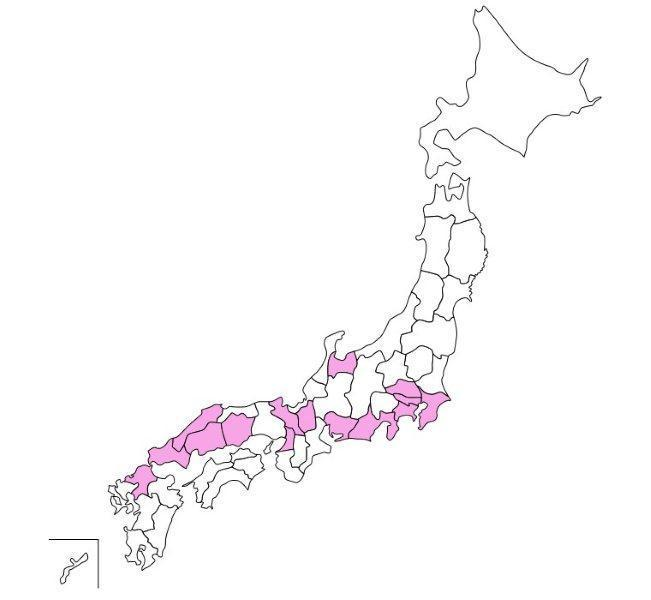

| 2012/04 10 Tue | ひめたん(* ゝω・*)ノ その128 |
久しぶりの自撮りいえい☆
65%笑顔っ(◎'ω`◎)!
 もうすぐ誕生日だね(^^)
もうすぐ誕生日だね(^^)
ファンレター以外に何かプレゼント送ってもいいかな?☆
福山に住んでるので、バラとかどうかな?
キザすぎるかな(笑)
バラ!いいねえキザだねえ(*'`*)嘘です。
でも本当に素敵!ひめたんバラ祭り行ったことあるよ♪
プレゼントはおまかせしますよー☆
ありがとうございますっ
桜好き?
桜すき＼(^O^)／
桜餅もすき。でもさくらんぼは普通...。
 放送部にも全国大会あるんですね!!何を競い合って成績が決まるんですか?
放送部にも全国大会あるんですね!!何を競い合って成績が決まるんですか?
個人で朗読とアナウンス、団体でテレビ、ラジオ部門があります(^^)!
燃えるんだよねこれがっ
放送部だったんだ!スピーチとかするのかな?
スピーチとはちょっと違うけど、毎日校内放送かけてましたよ♪
東京ミッドタウン歩けるの?迷子にならない?
ひとりだったらよー歩かん('・・`)
し、ひとりなら空気よんで引き返します多分...。
 3年のときでも学級委員とかあったん?
3年のときでも学級委員とかあったん?
学校のクラスでのエピソードとかあったら教えてほしいな♪
ありましたよ!え3年生は学級委員ないのー(ω)?
3年4組はにぎやかなんです。ちゃんとしなきゃいけない時も。ありゃりゃ←
 ボクシングしてる人ってどうですか?応援してくれますか?
ボクシングしてる人ってどうですか?応援してくれますか?
ボクシングわひゃああっ
テレビとかで見てて、痛くないかな大丈夫かなって思ってたの('・ω・`)
気をつけてね!超応援する!
左胸はみーんな共感できる応援歌だから。頑張りたい時辛い時聴いてください♪
立ち上がる回数諦めるなっ!!!
 生誕企画どうだったかな?喜んでくれたらいいな!
生誕企画どうだったかな?喜んでくれたらいいな!
本当に本当に嬉しかった!
あんね、どなたかコメントに書いてくださったけど、4月生まれっていつも損するの。
毎年クラス替えしてすぐが誕生日だから、みんな自分の誕生日を知らないじゃん...
だから今年はお祝いしてもらってTシャツも可愛くて
素敵な誕生日になりました(^^)♪
まだ13日なってないけど満足です//ぽ
 マイメロ好きですか?
マイメロ好きですか?
マイメロちゃん可愛いよね(*'`*)
赤と白のおかおってだけで身につけたくなるもん♪♪
ちなみに今のふでばこぴんくマイメロちゃん
☆
久しぶりにひめたんに手紙書こうかな?書いてほしい?笑
 お手紙書きたいと思ったのですが、忙しいのに読んでもらえますか?
お手紙書きたいと思ったのですが、忙しいのに読んでもらえますか?
お手紙超好きだよ書いてほしいもん♪
だから毎日会う友達にも「お願いお手紙書いてー('`)」って言ってたなあ...
でもほんとに何の時間削ってでも読むよ//
 好きなジュース何??
好きなジュース何??
ミキサーで作る(強調)
いちごジュースばななジュース♪
 何か楽器出来ますか?
何か楽器出来ますか?
ぴあの歴5年にして両手で弾けません。真面目に。
ソプラノリコーダー、音よれよれなけど一応 篠笛。
それからタンバリンは感覚で演奏できる気がする!
ボディパなら
かずみさん
(高山一実chan)だね☆ぐるカーのPVでも披露したしねっ
 リンクしてコメントしてるけど、たまにあたしたちのブログもみてますか??
リンクしてコメントしてるけど、たまにあたしたちのブログもみてますか??
いいのかなーて思って訪問したことなかったけど...
いいの(o>ω<o)?じゃあ遊びに言っちゃうよ!
DDがばれるからだめよって人は先に申し出てくれないと知らないよー?
 2ndにもメンバーの映像が入るってほんと?
2ndにもメンバーの映像が入るってほんと?
運営さんはうそなんかつきません(^ω^)!斯うご期待!
 ひめたんの家族はみんなシーフード無理なん??それともひめたんだけ??
ひめたんの家族はみんなシーフード無理なん??それともひめたんだけ??
ひめたんだけだねー。
ままはシーフード大好きなのにアレルギーなの('・・`)
 47都道府県の中で、どこに行ったことありますか?どこの県が好きですか?
47都道府県の中で、どこに行ったことありますか?どこの県が好きですか?
千葉、埼玉、東京、神奈川、静岡、愛知、富山、滋賀、
大阪、京都、岡山、鳥取、島根、山口、福岡。白地図参照!

 3年生の担任はどんな人でしたか?
3年生の担任はどんな人でしたか?
体育科の女の先生!
今でもたまに連絡してくれます。
活動したり東京で受験したり、中元さん面倒な生徒だったんですよね。
でも最後まで支えてくれた素敵な先生です☆
質問したらどのくらいたったら答えてくれるの??
う...ごめんなさい...。
できるだけタイムリーに答えられるよう努めます(ノω・`)
しばしお待ちをー☆
(*´・ω・*)ひめたん
コメント(111)
2012/04/10 23:30